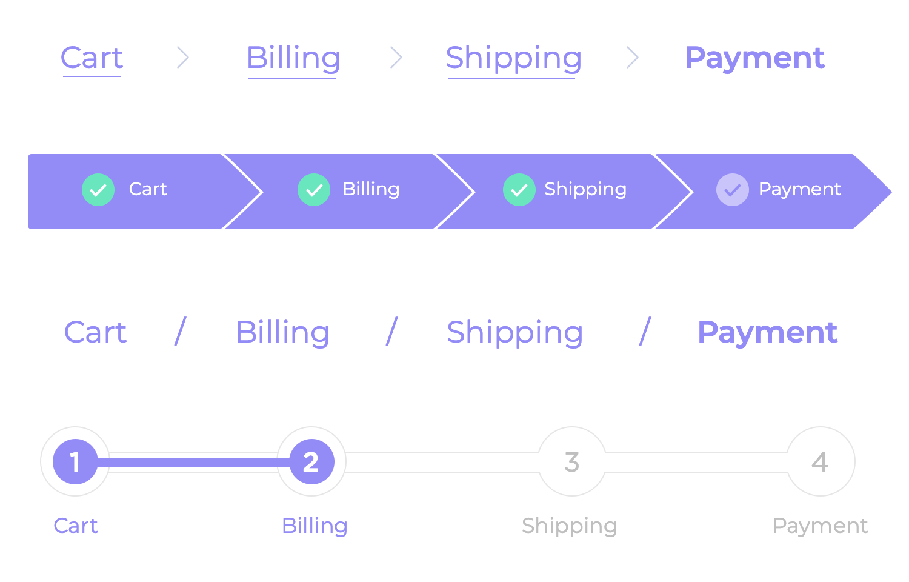
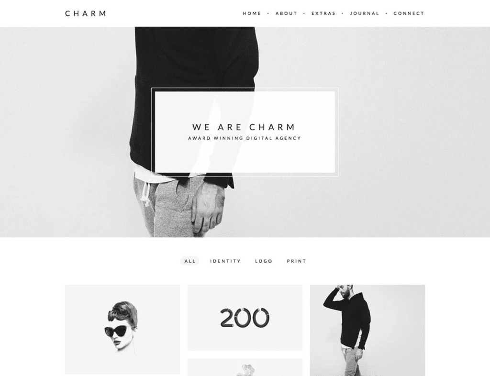
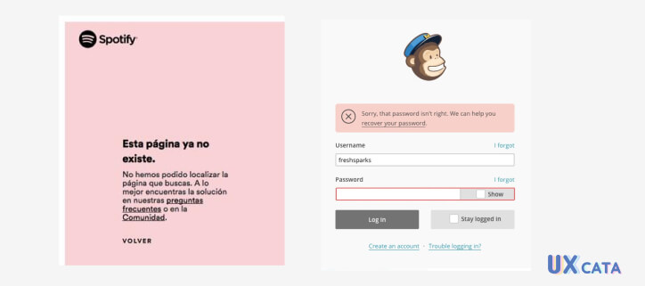

La usabilidad web se refiere a la facilidad con la que los usuarios pueden interactuar con un sitio web. Un
sitio web con buena usabilidad permite a los visitantes encontrar información, navegar por el contenido y
realizar acciones de manera intuitiva y eficiente. Esto incluye aspectos como la estructura del sitio, la
claridad de la navegación, la legibilidad del contenido y la accesibilidad para personas con discapacidades.
Esto es escencial para mejorar la experiencia del usuario y aumentar la satisfaccion del visitante en la
pagina, ya que un sitio accesible y bien diseñado siempre llamara mas la atención
Este principio comprende la importancia de mantener al usuario informado de lo que esta pasando o los pasos que tiene que seguir para completar una tarea, esta incluye mensajes de texto, componentes de ayuda o iconos que faciliten al visitante la comprension del sitio web.
Este principio sugiere que deberiamos extrapolar objetos del mundo real a nuestro proyecto, por ejemplo el uso de iconos que representen acciones o elementos familiares para el usuario.
En este caso se utiliza la casa como icono para representar la función de "inicio" o "volver a la página principal", el basurero como "eliminar" y el correo como "enviar".
Este principio se refiere a la capacidad del usuario para deshacer acciones o regresar a un estado anterior sin complicaciones, lo que les brinda una sensación de control sobre su experiencia en el sitio web.
Este principio se refiere a la necesidad de mantener un diseño y comportamiento coherentes en todo el sitio web, lo que ayuda a los usuarios a familiarizarse con la interfaz y a predecir cómo interactuar con ella.
Este principio refiere a prevenir cualquier situacion en la que el usuario pueda llegar a cometer algun error en el proceso que se llegue a realizar en la pagina, ya sea importar una imagen o enviar un mensaje vacio
Este principio estipula un orden en la pagina que sea de facil reconocimiento para el usuario evitando asi que tenga que recordar aspectos claves en la misma y se limite a solo poder reconocerlos de forma instantanea y asi mismo poder devolverse y orientarse en la misma
Un ejemplo de esto puede ser una barra que muestre el lugar en donde te encuentras actualmente
Este se refiere a la flexibilidad que tiene la web para adaptarse desde los usuarios mas novatos hasta los mas experimentados ofreciendo opciones tanto basicas como avanzadas
Este sugiere que la pagina web tenga un diseño sencillo entendible y poco sobrecargado, entendible para cualquier usuario y accesible para comprenderse de forma sencilla
Ejemplo de una interfaz ordenada y minimalista
Este principalmente ayuda al usuario a reconocer errores y corregirlos en la marcha ya sea algun problema por parte de el o la pagina
Un ejemplo de estos puede ser el uso de mensajes a la hora de tener un problema con la clave de tu cuenta
Sugiere que se tenga de forma accesible ayudas instantaneas al usuario como por ejemplo una pagina completa dedicada a la ayuda y documentacion